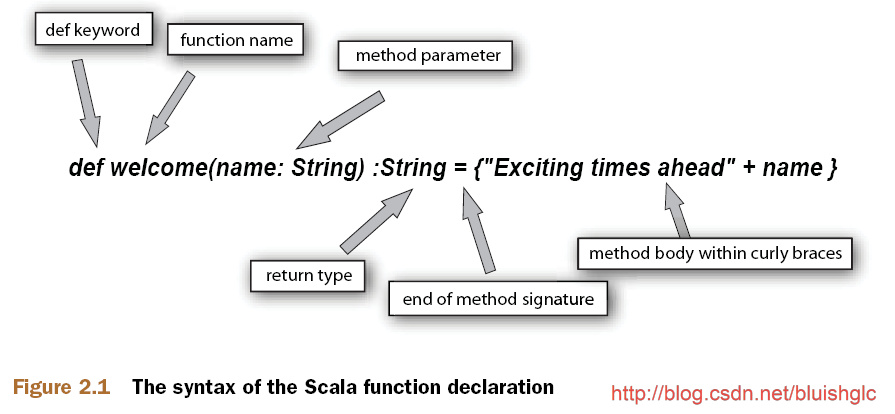
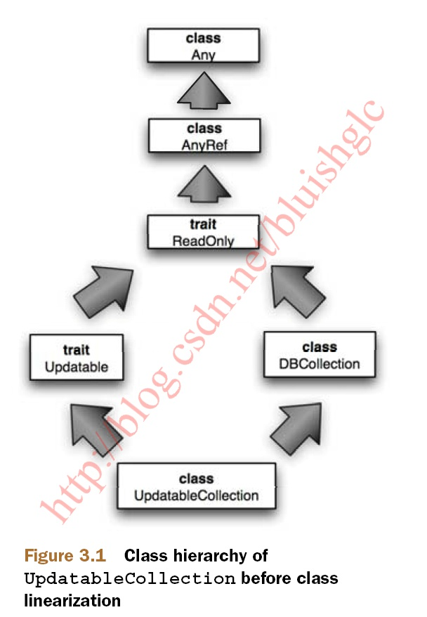
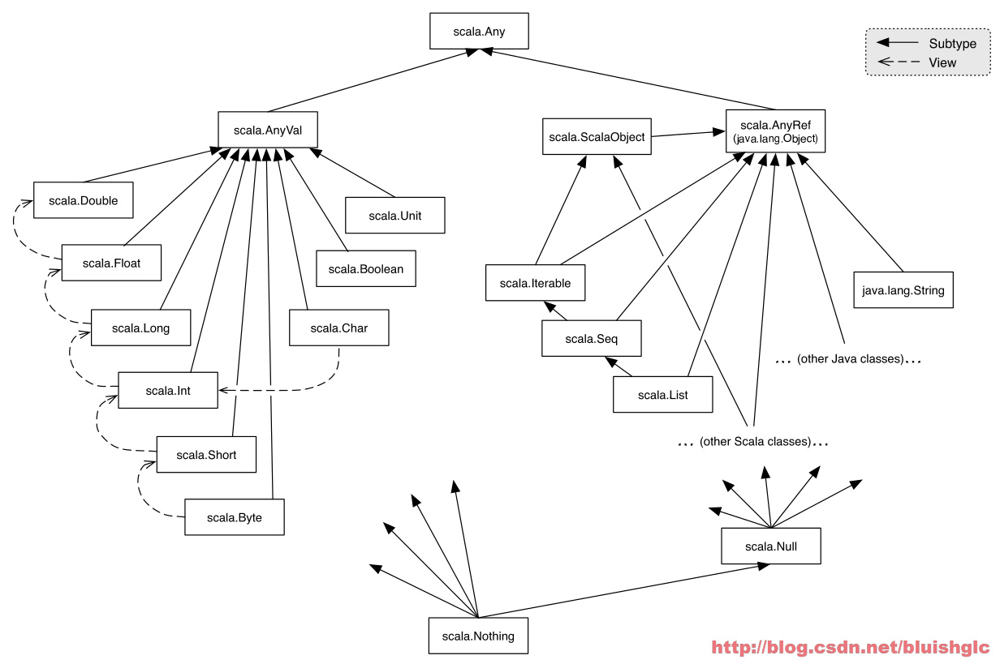

SCALA学习笔记（一）
SCALA学习笔记（一）
变量
获取变量的值是一个耗时的工作时，可以考虑使用lazy var.
lazy val forLater = someTimeConsumingOperation()
scala> val first :: rest = List(1, 2, 3)
first: Int = 1
rest: List[Int] = List(2, 3)
函数定义

“=”并不只是用来分割函数签名和函数体的，它的另一个作用是告诉编译器是否对函数的返回值进行类型推断！ 如果省去=,则认为函数是没有返回值的！
比如：
scala> def myFirstMethod() = { “exciting times ahead” }
myFirstMethod: ()java.lang. String
scala> def myFirstMethod(){ “exciting times ahead” }
myFirstMethod: ()Unit
方法调用
注：和本文的其他部分不同，该章节总结自《Learning Scala》一书：Methods and Operators一节，因为《Scala In Action》一书没有集中对这个知识点的讲解
通常，scala和其他大多数的语言一样，对方法的调用使用是： infix dot notation 格式，我们可以叫“小数点中辍格式”，也就是对象和方法名中间以“小数点”做中缀的方式：
1 | <class instance>.<method>[(<parameters>)] |
与此同时，scala还提供了另外一种方法调用方式： infix operator notation 格式，我们可以叫“操作符中辍格式”，也就是把方法名当做一种操作符，使用对象 方法名 参数中间以空格分隔的方式：
1 | <object> <method> <parameter> |
这我们思考一下为什么会出现这种样式的方法调用，应该说这是用于引入了“操作符做方法名”而产生的一种自然需要！实际上，scala中允许使用操作符做方法名基本上与C++中的操作符重载是一样的！
示例：
1 | scala> val d = 65.642 |
很显然，当我们引入了操作符重载之后，如果再使用“对象.方法名（参数）”的方式调用方法会看上去非常古怪，也就是这里的 d.+(2.721) ，此时就是使用infix operator notation样式的合适场所！
当然，这种调用样式并不是一定要使用在以操作符为方法名的方法上，如果你习惯，也可以使用在普通方法上。
函数字面量：FUNCTION LITERALS
In Scala you can also pass a function as a parameter to another function, and most of the time in those cases I provide an inline definition of the function. This passing of functions as a parameter is sometimes loosely called closure (passing a function isn’t always necessarily closure; you’ll look into that in chapter 4). Scala provides a shorthand way to create a function in which you write only the function body, called function literals.
以下几个示例中，大括号里面的部分都是函数字面量，
例如：
1 | //花括号中的部分是一个标准的函数字面量 |
在scala里， 一个下划线代表一个参数！
闭包：Closure
A closure is any function that closes over the environment in which it’s defined. For example, closure will keep track of any variable changes outside the function that are being referred to inside the function.
def breakable(op: => Unit) { … }
What’s this op: => Unit? The special right arrow (=>) lets Scala know that the breakable function expects a function as a parameter. The right side of the => defines the return type of the function—in this case it’s Unit (similar to Java void)—and op is the name of the parameter. Because you haven’t specified anything on the left side of the arrow, it means that the function you’re expecting as a parameter doesn’t take any parameter for itself.
如果我们需要的传入参数是一个代参数且有返回值的函数呢? 这样的函数作参数应该如何描述呢?
def foldLeft(initialValue: Int, operator: (Int, Int) => Int)= { … }
让我们这样来理解吧：既然对于函数式编程语言来说，函数是第一位（first class)的，它可以像其他数据类型一样被使用，那么当它作为函数的参数时，我们需要约定一个语法来描述这个”参数”（实际上是一个函数）的”类型”（实际上应该是这个函数的”元信息“）,那么对于一个函数来说，它的”类型“应该怎样去描述呢？从语言的设计者角度来考虑的话，那当然最合理的描述方式是：陈述出这个函数的参数类型和它的返回值类型！这也正是operator: (Int, Int) => Int)所做的！简单明了，合情合理！
Array与Array的基本操作
1 | scala> val array = new Array[String](3) |
对于给数组赋值的语句：array(0) = “This”，这里要说明的是：不同于java中的array[0] = “This” 在scala中，[]永远是用来制定参数类型的！
迭代Array的操作是非常简单的，我们只需要使用它的foreach方法，同时传递一个函数字面量即可。下面典型的例子是在迭代main函数的args参数列表：
1 | scala> array.foreach(println) |
Array的基本操作
关于Array的基本操作应该参考scala.collection.mutable.ArrayLike这个trait，然而有趣是的，Array并没有实现这个trait. 这是非常有意思的。
关这个问题的答案是Predef! Scala的Predef会隐式地将一个Array转成一个scala.collection.mutable
.ArrayOps. 而ArrayOps 是ArrayLike的一个子类。
FOR循环
1 | val files = new java.io.File(".").listFiles |
The only thing that looks different from for loops in Java or C# is the expression file <- files. In Scala this is called a generator, and the job of a generator is to iterate through a collection.
1 | scala> val aList = List(1, 2, 3) |
注：for语句的花括号｛｝并不是必须的，你完全可以使用().
模式匹配:Pattern Matching
模式匹配，示例一：
1 | ordinal(args(0).toInt) |
case _ to match everything else.
模式匹配，示例二：
在下面的这个例子中展示了scala一些内置的预定义的Pattern，专门应用于case上的，例如下面例子中的：f，s, rest
1 | scala> List(1, 2, 3, 4) match { |
模式匹配，示例三：
1 | val suffixes = List("th", "st", "nd", "rd", "th", "th", "th","th", "th","th"); |
类：Class
What val and var do is define a field and a getter for that field, and in the case of var an additional setter method is also created. When both of them are missing, they’re treated as private instance values, not accessible to anyone outside the class.
对于Class的field的修饰符有如下约定：
-
使用var声明field,则该field将同时拥有getter和setter
scala> class MongoClient(var host:String, var port:Int) -
使用val声明field,则该field只有getter。这意味着在初始化之后，你将无法再修改它的值。
scala> class MongoClient(val host:String, val port:Int) -
如果没有任何修饰符，则该field是完全私有的。
scala> class MongoClient(host:String, port:Int)
Getter和Setter
如何显示地定义一个字段的getter和setter
在Scala里，如果需要手动地为一个字段添加getter和setter规则是这样的：
-
字段名应以_在前缀，如_age
-
getter是一个function,其命名在字段名上去除_即可，如def age=_age
-
setter的定义看似有些奇怪，其实只是一些约定，熟悉以后就可以了。setter的命名是在去除字段名上去除 前缀，然后在后面添加” =”后缀，对是”_=”！然后再接参数列表，再之后就和普通的函数定义没有区别了！
我们再来看这个例子：
1 | class Person(var firstName:String, var lastName:String, private var _age:Int) { |
之后，我们可以这样使用：
1 | val p = new Person("Nima", "Raychaudhuri", 2) |
The assignment p.age = 3 could be replaced by p.age_=(3). When Scala encounters an assignment like x = e, it checks whether there’s any method defined like x_= and if so, it invokes the method.
Primary Constructor声明的字段其读写属性是如何规定的？
让我们通过一个完整的例子来看一下：
1 | scala> class Person(val firstName:String, var lastName:String, gender:String) |
很明显：
如果是var:生成getter和setter
如果是val:只生成getter
如果没有变量修饰符：没有getter和setter，等同于private.
但是注意对于Case Class，则稍有不同！Case Class对于通过Primary Constructor声明的字段自动添加val修饰，使之变为只读的。
1 | scala> case class Person2(firstName:String) |
构造函数
主构造函数：Primary Constructor
scala的主构造函数指的是在定义Class时声明的那个函数！简单的例子：
<scala> class MongoClient(val host:String, val port:Int)
对于这个class的定义，实际上它也是同时声明了一个构造函数：this(val host:String, val port:Int), 它就是所谓的主构造函数！
关于构造函数重载
在scala中，构造函数的重载和普通函数的重载是基本一样的，区别只是构造函数使用this关键字指代！当然，也不能指定返回值。
对于重载构造函数：它的第一个语句必须是调用另外一个重载的构造函数或者是主构造函数！当然除了主构造函数以外！ 这个表述如果再深入地一想，那么我们就可以想到：所有的构造函数在一开始就会首先调用主函数！！这也是为什么：scala对写在Class内的零星的脚本和代码片段的处理是通过移到主构造函数内去执行的原因！
1 | class MongoClient(val host:String, val port:Int) { |
在上面的代码汇编出错，因为它的第一行并不是在调用另外一个构造函数！
关于Scala的脚本特性
这是一个明显不同于java的地方，我们来看一个Class:
1 | class MyScript(host:String) { |
如果这是一个java类，则这显然是不合乎语法的。Scala的脚本特性体现在： *在一个类里，你可以随意的写一些脚本，或者说是代码片段更加形象，这些脚本会在对象实例化时被执行。
Packaging
两种风格，
风格一：
1 | package com { |
风格二：
1 | package com.scalainaction.mongo { |
每当你在类前声明： package com.scalainaction.mongo 时，则package中的对应代码会自动执行！
scala的package机制有意思的一点是：包的结构并不需要对应映射和class的文件结构上，当一个package被编译时，编译器会根据package的声明生成对应的文件结构！
Import
import com.mongodb._
Here’s another use for _, and in this context it means you’re importing all the classes
under the com.mongodb package.
并且你可以在任何地方使用import:
1 | scala> val randomValue = { |
下面是一种类似java中的static import的方式，导入一个类的所有方法：
1 | scala> import java.lang.System._ |
scala中的import还有另外一个方便的特性：在导入时它可以重命名类或包，这样会增加可读性，比如下面的这个例子：
1 | import java.util.Date |
Object对象
基于“纯OO”的理念，scala里没有static关键字的：一切皆对象!
但是为了能实现“全局唯一”的需要，scala支持一种叫做singleton object的对象，也就是限定一个类的实例只有唯一一个的机制。
1 | object RichConsole { |
上述代码定义了一个object：RichConsole，对于它的调用和与java里调用static的字段和方法是极其类似的！
像使用function一样使用object.
Scala provides syntactic sugar that allows you to use objects as function calls. Scala achieves this by translating these calls into the apply method, which matches the given parameters defined in the object or class.
实际上，这是一种“约定”，只要你的object中定义了一个apply方法，你是可以直接使用object的名字作为函数名后接与 apply方法对应的参数就可以实现对这个apply方法的调用！我们看下面的这个例子：
1 | scala> object A { |
这个语法机制多用于实例化一个对象，使得object成为一个工厂，我们接着看下面这个话题：
将object类型作为“工厂”Factory来使用
一个典型的工厂类（实际上我们这里指的是简单工厂（静态工厂）模式），通常是以static的工厂方法来create对象的，比如：
Factory.createObject("objectA");
让我们来看一下scala中通过object来实现的工厂类：
1 | //注意：class DB的primary constructor被标记为了private!! |
像上面提到的，既然这是一个object类型，那么调用工厂方法apply的方式就应该是这样： DB.apply(myUnderlying) 但是scala在这里有一个语法糖，它 允许我们像使用函数一样使用object! 所以上面的调用也可以写成这样： DB（myUnderlying)
让我们再来看另外一个更加明显和清晰的例子， 这是scala里一个典型简单工厂（静态工厂方法)模式的实现 :
1 | abstract class Role { def canAccess(page: String): Boolean } |
Trait
A trait is like an abstract class meant to be added to other classes as a mixin.You can also view a trait as an interface with implemented methods.
在Scala里，Trait像一个抽象类，它用于作为一种“mixin”混入到其他类中！你也可以把它看作是带有方法实现的接口(Interface),另一方面，trait区别于抽象类的地方在于：抽象类可以有构造函数，且构造函数可以有参数！但是对于trait，是没有带参数的构造函数的！所以说它更像是“有实现方法的接口”。trait不同于接口和抽象类的另一个地方是：它是不仅可以有抽象方法，还可以有抽象字段！
memoization：In computing, memoization is an optimization technique used primarily to speed up computer programs by storing the results of expensive function calls and returning the cached result when the same inputs occur again.
Trait和多继承
由于一个类可以混入多个Trait! 这很明显地让人联想到“多继承”机制，以及由此带来的问题！
这我们看下面这个例子：
1 | Class UpdatableCollection |
以下是类继承关系：

在这个类继承关系下，readonly的方法被Updatble和DBCollection两个条线路继承和改写，这样，对于UpdatableCollection来说就需要一种规则来确定继承路线,解决歧义性问题，scala使用的规则叫： class linearization 这个原则简单表述为：右侧优先，深度优先！
上面这个例子，在UpdatableCollection的类声明中，Updatable出现在最右侧，所以UpdatableCollection会优先继承Updatable里关于ReadOnly的实现，后续再出现相同的方法时就忽略掉。
Trait的“堆栈化”（叠加）特性
但是我们也要看到Trait这种类似多继承的特性对修改已存在组件的行为和构建可重用组件方面是有很大帮助的！我们只需要重新设计一个Trait，就可以轻松地把已有的Trait的行为替换掉，从这一点上我们也可以理解为什么在确定继承路线时，scala总是先从最右边开始了！这很像是一个堆栈！声明的每一个trait从左向右依次入栈,在解析时依次出栈，从最右则开始解析。
Case Class
以这样一段代码为例：
1 | scala> case class Person(firstName:String, lastName:String) |
当我们声明一个Case Class的时候，编译器会自动完成以下动作:
- scala prefixes all the parameters with val, and that will make them public value. But remember that you still never access the value directly; you always access through accessors.
对于Case Class，它的主构造函数的所有参数会被自动限定为val,也就意味着这个字段是外部可读的。 这与普通的Class主构造函数不同。
对于普通的Class：
1 | scala> class MongoClient(host:String, port:Int) |
如果没有任何修饰符，则该field是完全私有的，既无getter也无setter，只在类的内部可读。
-
Both equals and hashCode are implemented for you based on the given parameters.The compiler implements the toString method that returns the class name and its parameters.
-
Every case class has a method named copy that allows you to easily create a modified copy of the class’s instance. You’ll learn about this later in this chapter.
-
A companion object is created with the appropriate apply method, which takes the same arguments as declared in the class.
-
The compiler adds a method called unapply, which allows the class name to be used as an extractor for pattern matching (more on this later).
下面一组case class：
1 | //sealed关键字声明其他trait都不能再继承当前的trait |
关于case class生成的companion object
1 | case class Person(firstName:String, lastName: String) |
当我们声明上面这样一个case class的时候，我们知道scala会为case class自动生成一个companion object， 如果还原这个companion object的代码，应该是这样的：
1 | //注意：case class的companion object是隐式自动生成的！下面的代码并不是手动编写的。 |
-
对于apply方法不必再多介绍了，它会在创建Persion Class实例时调用。
-
对于unapply方法,它会在case class的模式匹配时使用！这个方法主要是把一个case class实例的进行“拆解”（unwrap)返回它的参数，以便进行模式匹配时使用！这大概的起名为unapply的原因吧。
命名参数 Named Arguments
先看例子：
1 | scala> case class Person(firstName:String,lastName:String) |
有时候，人们可能回错误地传递了参数，特别是当多个参数是同一类型时，这样编译器不能帮助我们检查出错误的。比如像上面的这个例子，如果我们在实例化p时错误的写成了 val p = Person("lastname","firstname") ，这种错误是无法依靠编译器来帮助我们发现的，scala中提供的“命名参数”机制可以帮助我们写出更加易读的代码，同时错误也更少！上面示例代码中，即使我们把参数的顺序都弄错了，但是由于传递的“实参”已被声明是指定给某个“形参”的，所以就不会出现任何错误和疏漏了！
在使用命名参数时，如果参数命名不匹配，编译器会报错，但是有这样一种case,如果一个方法，父类对参数有一个命名，子类在重写这个方法时把参数名也改了，那么在使用命名参数时应该使用哪一个？scala的原则是看实例化出来的对象是什么类型，如果是子类型，应该使用子类方法上的参数命名，如果这个对象被强制转换为了父类，则使用父类方法中的参数命名，看下面这个例子：
1 | scala> trait Person { def grade(years: Int): String } |
由于s的类型是SalesPerson，所以使用yrs命名参数1是OK的，使用Persion的years命名就报错！除非之前你把s强制转换成了Persion!
类成员修饰符
关于public:
By default, when you don’t specify any modifier, everything is public. Scala doesn’t provide any modifier to mark members as public.
关于abstract override
The override modifier can be combined with an
abstract modifier, and the combination is allowed only for members of traits. This
modifier means that the member in question must be mixed with a class that provides
the concrete implementation.
Scala的类体系结构
